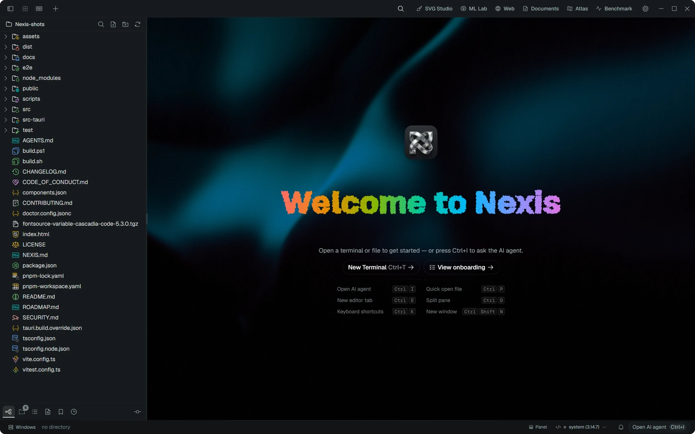
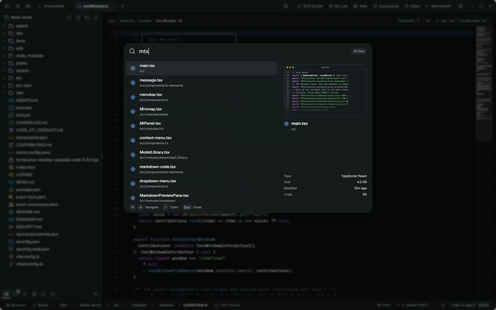
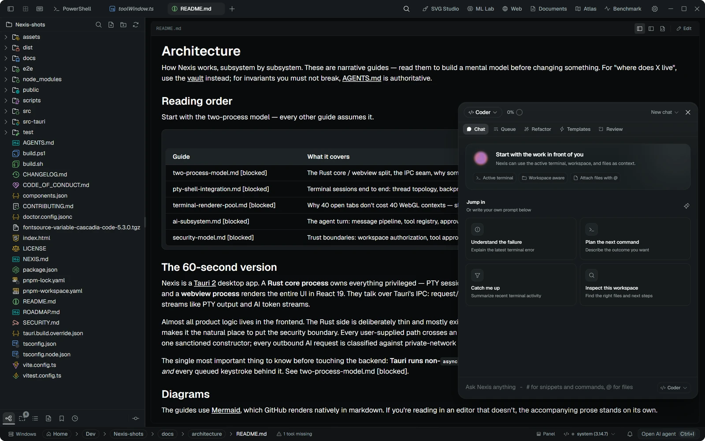
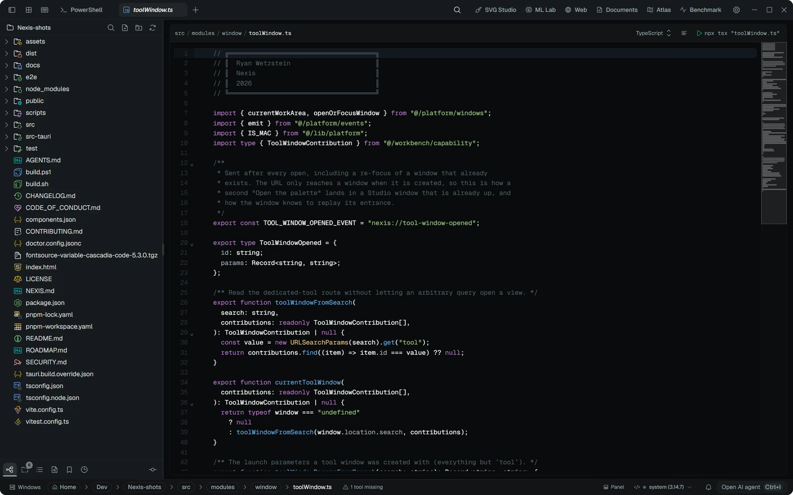
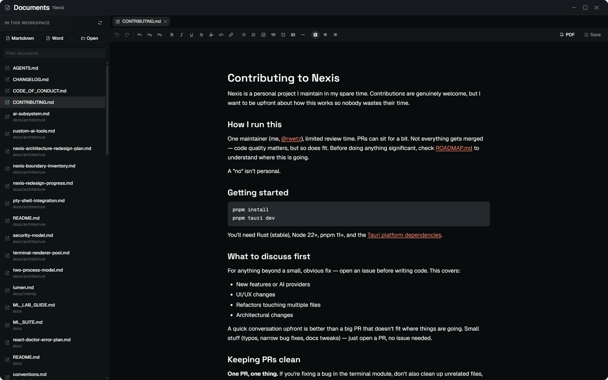
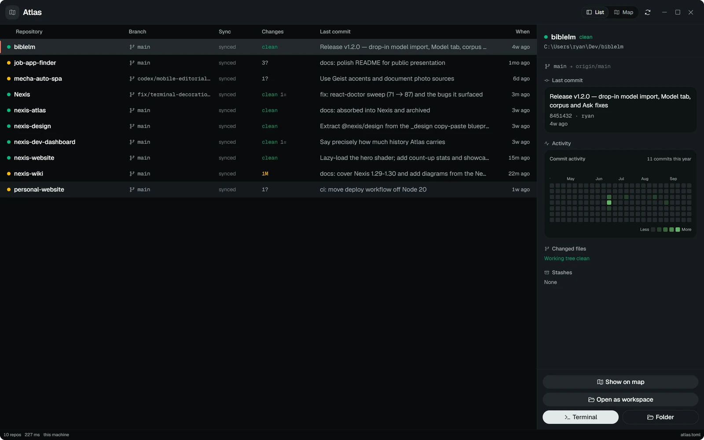
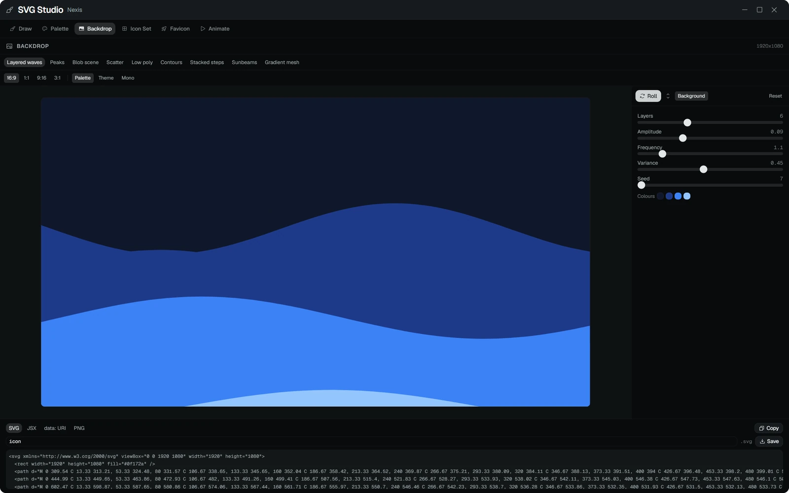

Spotlight
Files and commands, with a live preview

AI agent
Chat, queue, refactor and review in one window

Editor
AI completions and per-hunk diff approval

Documents
Markdown and Word, with local PDF export

Atlas
Every repo on the machine, with a commit heatmap

SVG Studio
Backdrops, palettes, icons and favicons